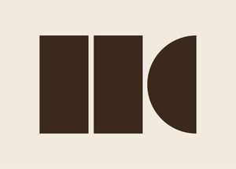

Trade Mark Journal No.2025/034 22 August 2025
WO0000001868556 (2,4,11,20,21,24,27)
Office of origin: European Union Intellectual Property Office (EUIPO)
Date of International Registration:19 February 2025
Date of designation in the UK:
19 February 2025

The mark contains the colours dark brown and sand beige.
- Class 2
- Paints, varnishes, lacquers; primers; coatings [paints and lacquers]; wall paint; lime wash paint; chalk paint; wood lacquer; floor coatings; concrete-look paint and lacquer; rust-preventing preparations and wood preservatives; mordants; preparations for drying paints.
- Class 4
- Candles; scented candles; lighter fluid for fireplaces and table burners.
- Class 11
- Apparatus and installations for lighting, heating, steam generating and cooking; lighting; lamps, floor lamps, hanging ceiling lamps, table lamps, wall lights, chandeliers; lamp glasses, incandescent light bulbs, lampshade holders, lampshades, fixtures for lamps, fairy lights for festive decoration; burners; table burners; lanterns; fireplaces, stoves [heating apparatus]; terrace lighting and heating; lighting and heating apparatus incorporating regulating and safety accessories.
- Class 20
- Furniture, living room furniture, kitchen furniture, bathroom furniture, garden furniture and bedroom furniture; office furniture; furniture, including chairs, stools, seats, armchairs, chaise longues, hanging chairs, sofas, couches, sofas, settees, divans, tables, coffee tables, side tables, beds, bed bases, cupboards, drawers, bookcases, wardrobes, clothes racks, credenzas; built-in furniture for kitchens; mirrors, mirror frames and picture frames of wood, cork, cane, reed, wicker, horn, bone, ivory, baleen, tortoiseshell, amber, mother of pearl, meerschaum, plastic and substitutes for all of these materials, included in this class; works of art and decoration including carvings, of materials such as wood, straw, bone, shell, wax, resin, plastic or plaster, or substitutes therefor; wine racks; book stands; magazine racks; umbrella stands; coat racks, mattresses, cushions; seat or decorative pillows; baskets, not of metal; room screens; space dividers [furniture]; picnic baskets [not fitted].
- Class 21
- Household or kitchen utensils and tableware; raw or semi-manufactured glass (except glass used for building purposes); glass, porcelain and earthenware; bakeware; baking molds; tableware of glass or porcelain; mugs, cups, glasses; plates, bowls, dishes, jugs; cake domes and cake stands; candle holders, candle stands, tealight holders; trays; earthenware; statues, figurines, plaques and works of art of porcelain, terracotta, glass, ceramics and earthenware; works of art and decorations made of porcelain, earthenware, terracotta, glass, ceramics and plexiglass; vases; trays for serving; cutlery trays; knife blocks; cutting boards; wine coolers; carafes; plant and flower pots; covers for dishes made of glass; boxes of glass, ceramic, earthenware and porcelain; bottles of glass, ceramic, earthenware and porcelain; teapots; thermos flasks; mugs; salt and pepper mills; spice holders; pans and woks; plastic ice cube molds; bottles; beverage can holders; dustbins; non-electric percolators; bottle openers; non-electric coffee makers; thermally insulated containers for food and drink; coolers [non-electric] and jugs [drinking utensils] of both rigid material and fabrics for use at home or at picnics; fully equipped picnic baskets; lunch boxes; cool bags and boxes; cosmetic and toilet utensils; cosmetic and cleaning brushes, except brush pens; toilet brushes; soap dispensers; toothbrush holders; bath sponges; cooking and table utensils, except forks, knives and spoons.
- Class 24
- Textile products and substitutes therefor; linen; bed clothes and blankets [except furniture]; quilt covers; fitted sheets, sheets [textile], bed blankets, throws, pillowcases; towels, tea towels; bath towels; washcloths; curtains of textile or plastic; plaids; tablecloths; runners [tablecloths]; wall decorations of textile; wall hangings of textile; picnic blankets; mosquito nets.
- Class 27
- Carpets and rugs, whether or not handmade; bath mats; wall hangings, not of textile; wallpaper and plastic wallpaper.
Hetsen & Klaver B.V.
Representative: RISE, Harmenjansweg 15, NL-2011 AZ Haarlem, NETHERLANDS